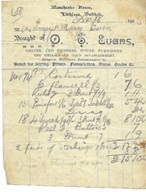
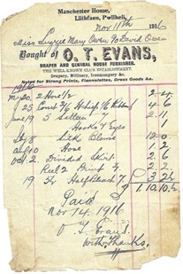

Manchester House
Owen Evans oedd yn cadw siop ddillad yn Manchester House i ddechrau. Tudor Evans fyddai’n cadw siop yma yn yr 1940au. Byddai hefyd yn gwerthu dillad, sanau ac yn y blaen. Roedd yn frawd i Dinah Olwen oedd yn y Post. Roedd Tudor yn byw ym Mhwllheli a byddai’n dod i Lithfaen bob dydd. Bu Tudor hefyd yn cadw bysys glas a hufen a deithiai o Edern, Caernarfon a Llithfaen, drwy Pistyll, Pemprys ac yna i Bwllheli. Prynodd ddau fws Guilford newydd sbon. Gwerthodd ei fysus i gwmni Crosville yn 1937.
 Siop Tudor, y drws nesaf i'r Post
Siop Tudor, y drws nesaf i'r Post
Cofiai Beti, chwaer Lena Pritchard bod siop Tudor yn gwerthu dillad a sanau. Yn y 1940au, roedd Tudor yn byw ym Mhwllheli ac yn dod i Lithfaen bob dydd. Bu Tudor Evans yn rhedeg tacsis a bysus. Teithiai’r bysus o Edern, Caernarfon, a Llithfaen, drwy Pistyll, Pemprys ac yna i Bwllheli. Prynodd ddwy Guilford newydd sbon. Roeddent yn fysys glas a hufen. Byddai’n cludo plant i Ysgol Pentreuchaf. Gwerthodd Tudor ei fysus i gwmni Crosville yn 1937.
 Dwy dderbyneb o Manchester House, Llithfaen
